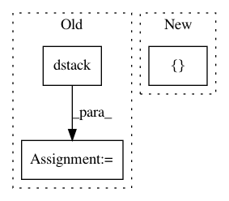

a1926719a8174e17f9b002c6369880f11b5dab88,tensorforce/value_functions/deep_q_network.py,DeepQNetwork,create_training_operations,#DeepQNetwork#,121
Before Change
name="target_values")
with tf.name_scope("training"):
action_indices = tf.squeeze(np.dstack([tf.range(self.batch_size), self.actions]))
batch_q_values = tf.identity(self.training_network, name="batch_q_values")
q_values_actions_taken = tf.gather_nd(batch_q_values, action_indices)
// Mean squared error
After Change
name="target_values")
with tf.name_scope("training"):
self.q_targets = tf.placeholder(tf.float32, [None], name="q_targets")
self.q_values_actions_taken = tf.placeholder(tf.float32, [None], name="q_values_actions_taken")
// Mean squared error
In pattern: SUPERPATTERN
Frequency: 3
Non-data size: 3
Instances
Project Name: reinforceio/tensorforce
Commit Name: a1926719a8174e17f9b002c6369880f11b5dab88
Time: 2016-11-13
Author: mi.schaarschmidt@gmail.com
File Name: tensorforce/value_functions/deep_q_network.py
Class Name: DeepQNetwork
Method Name: create_training_operations
Project Name: GPflow/GPflow
Commit Name: 5809cb0b339612434f4f332a91a2cd3e4570c34d
Time: 2018-02-26
Author: james@prowler.io
File Name: gpflow/transforms.py
Class Name: LowerTriangular
Method Name: backward_tensor
Project Name: CellProfiler/CellProfiler
Commit Name: a249f8be333197908a1f79f7279c2feae2ab3e22
Time: 2014-03-04
Author: leek@broadinstitute.org
File Name: cellprofiler/modules/identifysecondaryobjects.py
Class Name: IdentifySecondaryObjects
Method Name: display